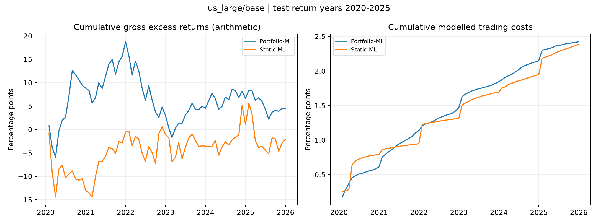
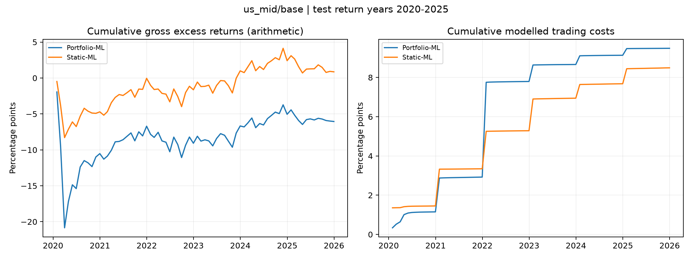
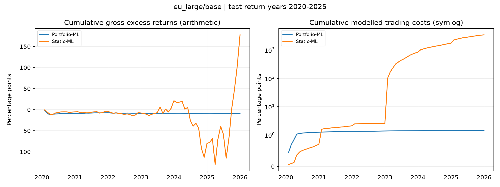

Test return months: January 2020–December 2025. Each region is evaluated separately. Returns, costs, volatility and utility below are annualised percentages; leverage and turnover are ratios.
Timing: annual expanding refits and monthly weight updates. Models are not frozen after the initial training period. OOS is the broader forward-prediction history, not a separate unseen holdout.
| dataset | strategy | n | Gross return % | Cost % | Net return % | Volatility % | SR_net | Utility % | Lev | Turnover |
|---|---|---|---|---|---|---|---|---|---|---|
| eu_large/base | Portfolio-ML | 72 | -1.53 | 0.2457 | -1.776 | 3.308 | -0.5369 | -2.323 | 0.1357 | 0.01735 |
| eu_large/base | Static-ML | 72 | 29.6 | 574.9 | -545.3 | 78.01 | -6.99 | -849.6 | 12.06 | 1.124 |
| us_large/base | Portfolio-ML | 72 | 0.7439 | 0.4036 | 0.3402 | 7.656 | 0.04444 | -2.591 | 1.045 | 0.113 |
| us_large/base | Static-ML | 72 | -0.3466 | 0.3975 | -0.7441 | 9.288 | -0.08012 | -5.057 | 1.734 | 0.1017 |
| us_mid/base | Portfolio-ML | 72 | -1.008 | 1.581 | -2.589 | 6.716 | -0.3855 | -4.845 | 0.2527 | 0.02519 |
| us_mid/base | Static-ML | 72 | 0.1435 | 1.415 | -1.271 | 3.793 | -0.3352 | -1.991 | 0.2482 | 0.02193 |
Read net return and utility after costs alongside gross return, leverage and turnover. High gross forecasting performance can be outweighed by quadratic trading costs. Large estimated costs indicate infeasibility under the existing unconstrained implementation; removing other strategies does not fix that constraint problem. These are retained historical backtests, not fresh unseen-market evidence.
Static ML converts annual return forecasts into monthly cost-aware holdings with fixed portfolio multipliers. Portfolio ML estimates signal coefficients against a risk-and-trading-cost objective and moves monthly holdings toward its aim portfolio. Differences measure these existing portfolio rules; they do not isolate a causal benefit of ML.
Market folders: US high cap | US mid cap | European high cap


